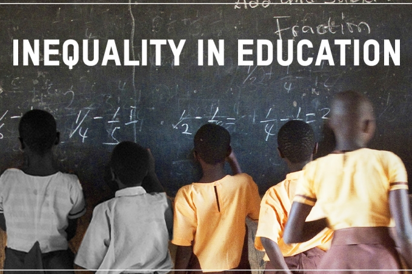
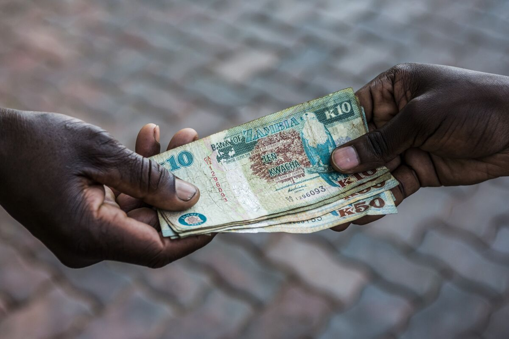
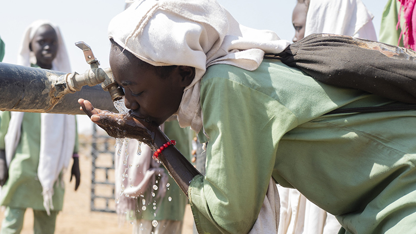

This project provides an overview of global economic data, encompassing corruption, cost of living, wealth distribution, unemployment, and tourism datasets. It explores key insights to identify relationships and trends within these datasets.

This project visualizes global educational inequality from 2010 to 2021, revealing trends and disparities across regions and development groups.

This Python visualization project explores the financial crisis in Africa, analyzing key economic indicators such as GDP, inflation, and unemployment rates. Using libraries like Matplotlib and Seaborn, the project presents data trends and correlations, offering insights into the underlying causes and impacts of financial instability across the continent.

This project uses Python to visualize UN water data, offering insights into global water usage, availability, and sustainability through comprehensive charts and graphs.
This project explores malaria in Africa, examining its incidence, reported cases, and the impact of population distribution and access to basic services on disease spread and control. Through data analysis and visualization, we highlight malaria dynamics and efforts to combat this epidemic.